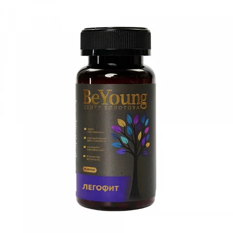

Качество и документы
Центра Болотова
Открыто показываем документы на каждый продукт, который выпускаем.
Каждый продукт
с документами
Бальзам Болотова выпускается по запатентованной формуле академика Бориса Болотова. Мы — его единственный официальный производитель.
Перед продажей продукт проходит лабораторные испытания и санитарно-эпидемиологическую экспертизу в аккредитованных центрах, а затем получает свидетельство о государственной регистрации или декларацию о соответствии.
Каждый документ можно открыть и посмотреть целиком — номер, дата и организация указаны на карточке.
Документы на бальзам
Шесть документов — от протоколов лабораторных испытаний до свидетельства о регистрации и товарного знака.

Где производится
и проверяется?
Три производства в России и три аккредитованных испытательных центра


ООО «КоролёвФарм»
Изготовитель Бальзама Болотова. Московская область, г. Королёв, ул. Пионерская, д. 4. Выпуск по ТУ 10.89.19-001-15722199-2019.
ООО «Биофарм» и ООО «Завод косметики»
Биологически активные добавки ПилорУМ и Чистый Хрусталь выпускает «Биофарм». Гели и зубные пасты Болотова — «Завод косметики», Мытищи.
Испытания и экспертиза
Федеральный центр гигиены и эпидемиологии Роспотребнадзора (аккредитация RA.RU.710003), Центр гигиены и эпидемиологии в городе Москве (RA.RU.21НН96) и испытательный центр «Тест качества».
Бальзам поступает в продажупосле государственной регистрации
Технические условия, лабораторные испытания, экспертиза Роспотребнадзора и свидетельство о регистрации. Каждый шаг подтверждён документом.
подтверждено
Пять шагов — пять документов
Номер и дата каждого шага взяты из документа.
- ✓Технические условияТУ 10.89.19-001-15722199-2019
- ✓Протокол испытаний№ 100720/19 · 17.07.2019
- ✓Лабораторные исследования№ 2050 · 26.07.2019
- ✓Экспертное заключение№ 10 ФЦ/2337 · 05.09.2019
- ✓Государственная регистрация№ …002719.09.23 · 20.09.2023
Документы по продуктам
В каталог
Легофит
○ документ не выложенБиблиотека документов
12 сканов · нажмите, чтобы открытьКак отличить оригинальный Бальзам Болотова?
Оригинальный бальзам выпускается в бутылках 250 и 475 мл под товарным знаком «Бальзам Болотова» № 769395. На транспортной коробке указаны номер партии, дата изготовления и срок годности.
Почему зимой в бутылке 475 мл налито 400 мл?
В холодное время года бальзам разливают по 400 мл, чтобы бутылка не треснула при температуре ниже −10 °C.
Как хранить бальзам?
В недоступном для детей месте при температуре не выше +25 °C. Срок годности — 2 года.